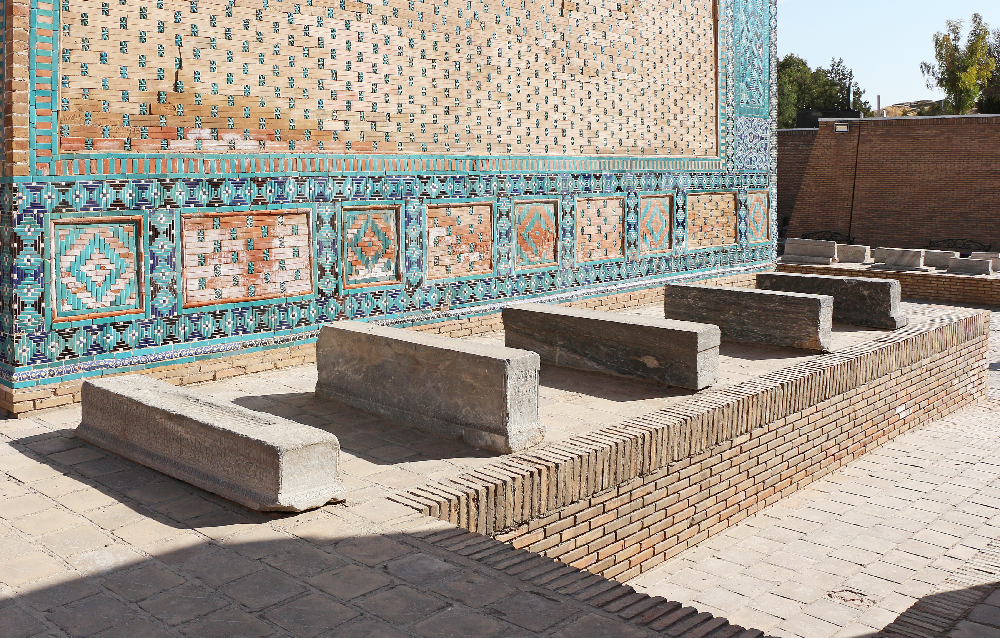

Исламский обряд похорон и погребения: как совершаются гусль, кафан, заупокойная молитва и погребение
В исламе проводы покойного состоят из четырёх основных действий: гусль (омовение), кафан (обёртывание в белую ткань), заупокойная молитва (салят аль-джаназа) и погребение (дафн). В этом справочнике на основе источников разъясняются каждый этап, порядок заупокойной молитвы (четыре такбира, без поясного и земного поклонов), правила траура, а также практические аспекты для Узбекистана и диаспоры за рубежом. Религиозный обряд не заменяет юридическую или личную консультацию.

В исламском праве проводы умершего мусульманина — общинная обязанность живущих мусульман (фард кифая): если её исполняет часть общины, с остальных она снимается; если не исполняет никто, виновна вся община. Обряд состоит из четырёх основных действий: гусль (омовение тела), кафан (обёртывание в белую ткань), салят аль-джаназа (заупокойная молитва) и дафн (погребение). Каждый этап ниже изложен исключительно как факты со ссылками на источники.
1. Гусль — омовение тела
Тело омывают чистой водой нечётное число раз — обычно трижды, при необходимости пять или семь раз. Омовение обычно совершают близкие родственники того же пола или специально назначенные люди: мужчин омывают мужчины, женщин — женщины. Павший в бою (шахид), по мнению большинства учёных, не омывается и погребается в своей одежде. Омовение начинается с малого омовения (вуду).
2. Кафан — обёртывание в белую ткань
Тело заворачивают в простую белую ткань. По традиции для мужчины используют три полотнища, для женщины — пять. Простой, чистый, а не роскошный саван считается соответствующим Сунне. Отдельные правила действуют для умершего в состоянии ихрама во время хаджа или умры.
3. Салят аль-джаназа — заупокойная молитва
Заупокойная молитва совершается стоя; в ней нет поясного (руку) и земного (суджуд) поклонов. Она состоит из четырёх такбиров: после первого такбира читается сура аль-Фатиха (в ханафитской школе ей предшествует «сана»); после второго произносится салават Пророку (мир ему); после третьего совершается мольба (дуа) за покойного; после четвёртого даётся таслим (салам). Заупокойная молитва также является фард кифая и предпочтительно совершается коллективно.
4. Дафн — погребение
Покойного погребают как можно скорее — по мнению многих учёных, в течение одного дня после смерти. Тело кладут в могилу лицом в сторону киблы (Мекки), обычно на правый бок. Кремация в исламе строго запрещена — тело предают земле. Возведение чрезмерно пышной могилы в ряде преданий не поощряется.
Траур и соболезнование
Родственники и друзья выражают соболезнования (тазия); общий траур обычно длится три дня. Для вдовы срок ожидания (идда) составляет четыре месяца и десять дней (или до родов, если она беременна). Исламское учение осуждает чрезмерные причитания, выставление тела напоказ и показную роскошь; поощряются терпение и мольба. Распространённые в Узбекистане и Центральной Азии поминки на третий, седьмой, двадцатый и сороковой день — это местно-культурные обычаи, религиозный статус которых обсуждается среди учёных.
Практический порядок в Узбекистане
В Узбекистане похороны обычно организуются через махаллю и мечеть; тело погребают на местном кладбище. Смерть регистрируется в государственном органе — органе записи актов гражданского состояния (ФХДЁ), который выдаёт свидетельство о смерти; этот документ нужен для наследования, пенсий и других юридических вопросов. Религиозный обряд проводится при участии имама махалли.
Для диаспоры за рубежом
В США и других странах процесс организован иначе: выдаётся свидетельство о смерти, а погребение обычно осуществляется через похоронное бюро (funeral home) и мусульманское кладбище. В некоторых штатах могут требоваться бальзамирование или гроб, что может противоречить исламским принципам быстроты и простоты, поэтому многие семьи обращаются к мусульманским похоронным службам. Для репатриации тела в Узбекистан требуются консульские документы и соответствующие разрешения.
Итог: суть исламских похорон и погребения — проводить тело быстро, просто и с уважением: гусль, кафан, заупокойная молитва и погребение. Светский закон, в свою очередь, требует свидетельства о смерти и регистрации. Этот справочник даёт общие факты; в конкретных случаях обращаются к местному имаму и официальным органам.